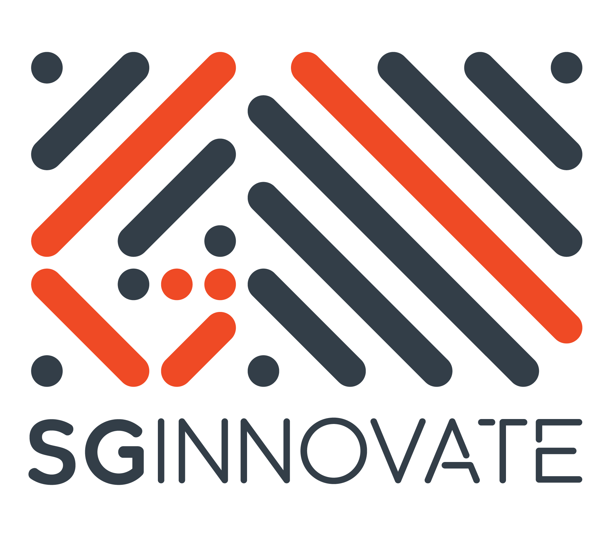

Roast #4 · May 7, 2026 · Singapore
Three stacks on the chopping block at SGInnovate: a LinkedIn analytics rig, a caregiver support app, and an AI-voice interview app for job seekers — with a full ops crew helping the roast run smooth.
Speaker 01
Analytics To Chase Reach
The discussion centred on what to instrument when the goal is maximum reach — which metrics matter, how to attribute them, and when vanity metrics hide the actual driver of growth.
Speaker 02
Care Compass
Ee One Lim
Presented an app that directs caregivers to the right support resources, so families spend less time hunting and more time caregiving.
Directing Caregivers To Support
Caregivers often don't know what help exists or where to find it. The app maps the landscape of support resources and routes each caregiver to what fits their situation, with the roast focused on keeping those recommendations grounded and current.
Speaker 03
Voice Resume
Kaleb Nim
Demoed a voice resume — an AI-voice interview app that lets potential employers ask anything and receive real-time answers, turning a résumé into a living conversation.
A Résumé That Answers Back
The pitch: instead of a static document, employers get to grill an AI voice representing the candidate, answering questions about their experience in real time. The room probed the reliability of those answers and what happens when the voice drifts from the truth.
Ops crew
Venue sponsor

SGInnovate
32 Carpenter Street · Hosting the Roast My TechStack series since the community's earliest days.